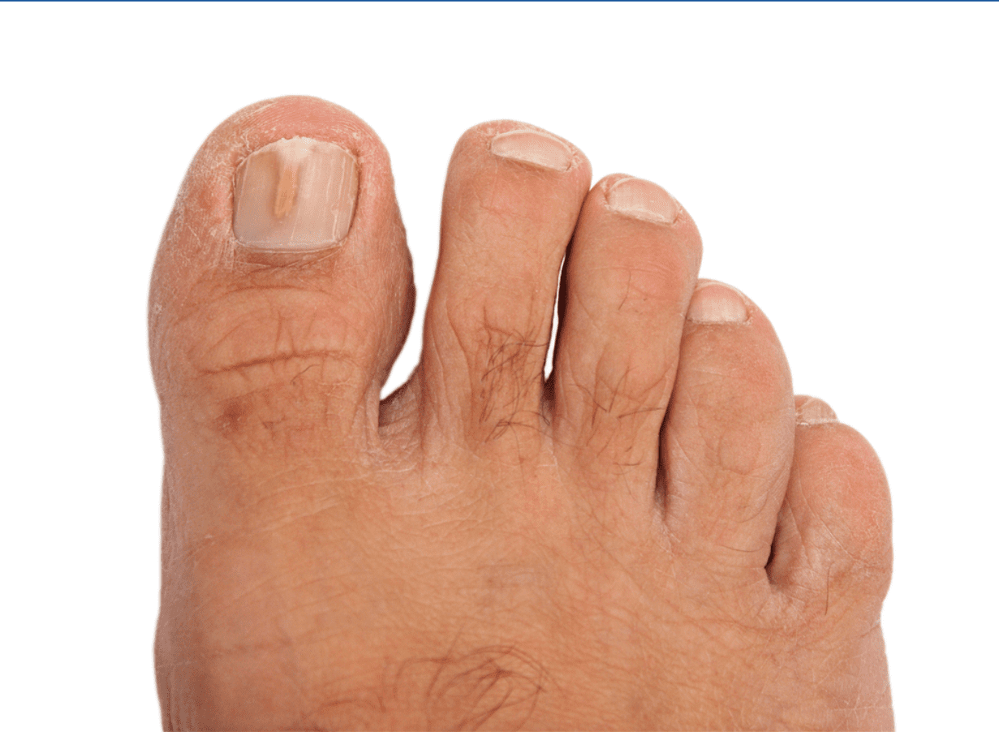
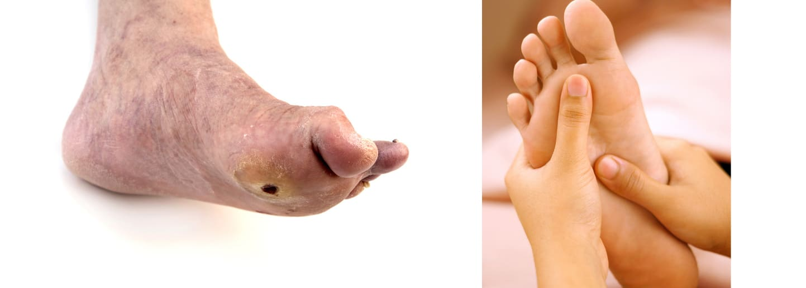
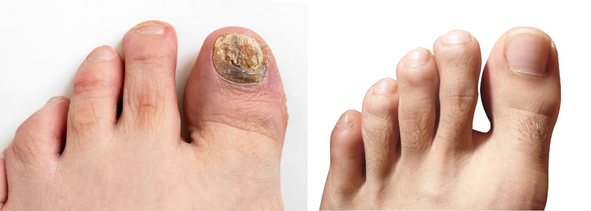
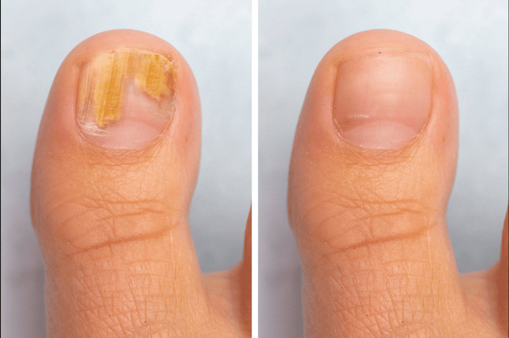
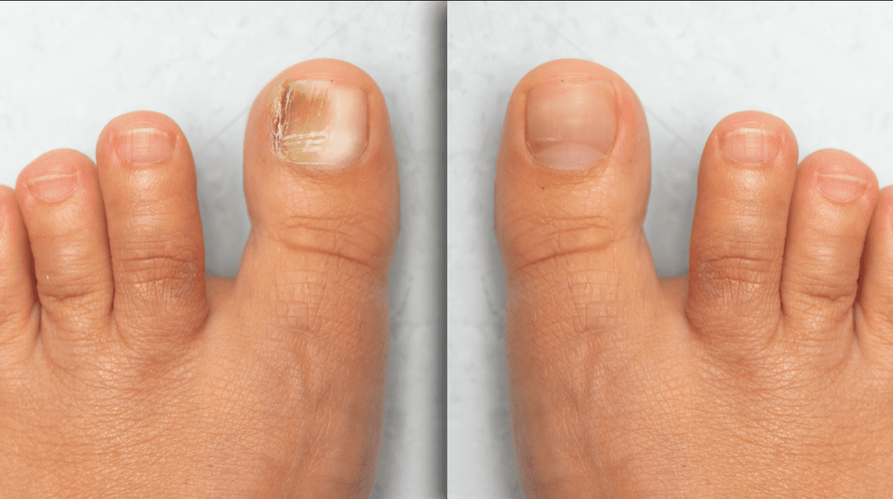
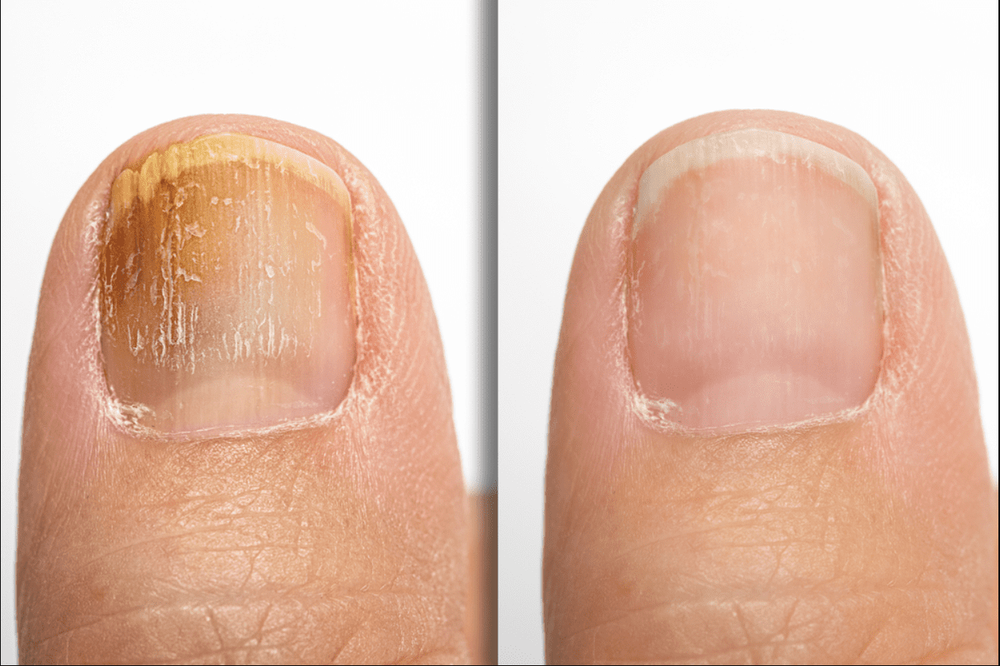
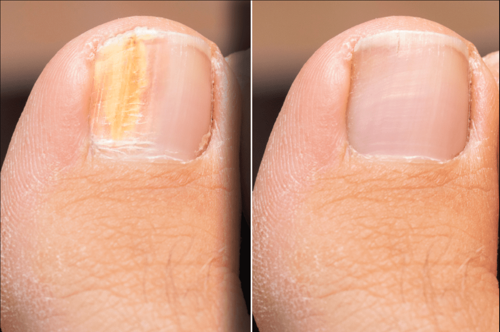
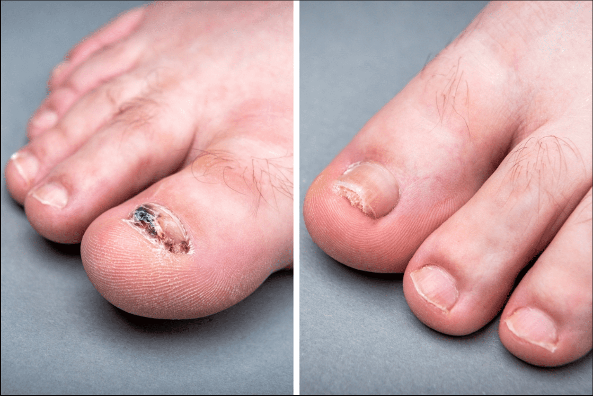
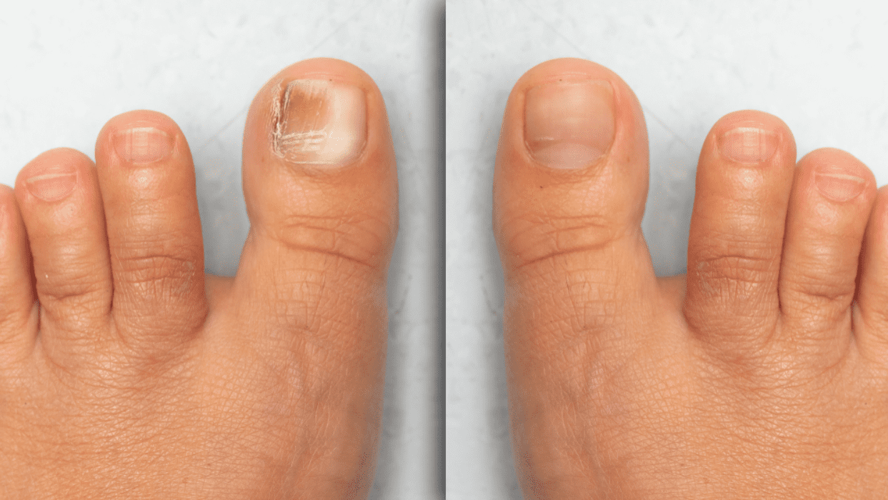

Ексклузивен доклад: Краката ви миришат толкова лошо, че дори семейството ви ИЗБЯГВА? Не се притеснявайте, ние имаме спасение за вас: лудостта по вашите крака тепърва ПРЕДИстои
- Този ден беше най-трудният в живота ми. Не можех да спра да плача. Бягах, колкото ме държаха краката, въпреки че краката ме боляха. Усетих и кръв.
Имах чувството, че всички ме гледат и че всички ми се смеят. Изобщо не се обърнах. Някак си се прибрах. Бях твърде неудобно да извикам такси. Аз съм от единия до другия край на града тръгна изцяло пеша.
Здравата кожа и здравите крака са ключът към доброто здраве.
Проблемите ми с гъбична инфекция започнаха в тийнейджърските ми години. Първоначално не му обърнах особено внимание. Редовно се грижих за хигиената си и смятах, че това е преминаваща фаза.
Колко грешах!
Последствията от несвоевременното лечение бяха катастрофални. Заболя ме само като си помисля за краката си. Ходех благодарение на изсъхналите струпеи. ПРЕДИИ това имаше отворени рани. Вонята беше непоносима. ПРЕДИизвика мигновено желание за повръщане. През зимата всичко се влоши. Краката бяха в обувки или ботуши цял ден. Беше екологична бомба.
За известно време се опитах да нося вакуумни торбички, за да не се разпространява вонята. Около мен се вдигна толкова много шум, че станах обект на подигравки сред колегите. Никой не искаше да седне до мен. Първо заради вонята, а по-късно защото прозорецът трябваше да стои отворен през цялото време.
Плаках много. Не можах да се справя. Нямах семейна подкрепа. Беше толкова неудобно, че за известно време ми се прииска да нямам крака.
Що се отнася до лекарствата, препаратите, леченията, инжекциите и всичко останало, няма нещо, което да не съм пробвал и пробвал. Бях морско свинче. Който би му казал да веднъж нещо помогна с подобен проблем, използвах го и се надявах да помогне.
Имаше и много алтернативна медицина, която просто усложни работата ми. Когато исках да се лекувам частно, някои клиники ме избягваха, защото нямаха лекарства за мен.
В този период записах магистратура по фармация, където се запознах с настоящата си приятелка, бъдеща кръстница, Амила Алич.
Амила има едно специфично увреждане, тя няма обоняние.

Когато се срещнахме за първи път, се чудех защо и тя не ме избягва. Тогава никой не знаеше, че Амила има
този проблем, защото тя не искаше да говори много за него.
Всеки път, когато я попитах дали краката ми миришат лошо, Амила отговаряше, че не миришат и че не знае защо задавам такива въпроси. Харесах го и така се роди страхотно приятелство.
Когато завършихме университета, организирахме празненство в столичен ресторант.
Обикновено избягвах всички публични събирания, доколкото можех. Амила беше разочарована, защото не искам да ходя.
Беше ми трудно, но през сълзи й признах какъв проблем имам и й показах в какво ужасно състояние са краката ми.
Спомням си, сякаш беше вчера, че тя обеща да ми помогне да реша проблема си.
Намерих приятел за цял живот!
Амила беше един от най-добрите ученици на нашето поколение. Имала аптека "в малкия си пръст".
След като завърших колежа, започнахме да търсим решения на моя проблем.
Следвахме системата на елиминиране. Като решение елиминирахме всичко, което бях пробвал до тогава, но не помогна. В крайна сметка направихме списък с потенциални формули, които създадохме и синтезирахме. Едно от тях щеше да бъде моето решение.
Стигнахме до етапа на тестване и това беше моята задача. Амила ми помогна, защото беше научена да не съди хората по проблемите им.
Всички формули дадоха оПРЕДИелени резултати, но след известно време всичко се върна към ПРЕДИишното състояние. Въпреки това, крайната формула, маркирана с E2678 или Mikoherb, както я нарекохме, постигна значителен наПРЕДИък.
Продължих да го използвам и забелязах, че просто трябва да издържа.
Първо изчезна болката, която беше непоносима за мен. Раните започнаха да изсъхват, а грозните и големи струпеи паднаха. На някои места видях здрава кожа след дълго време.
Тази неприятна миризма изчезна с времето. Когато видях, че ситуацията непрекъснато се подобрява, ми стана по-лесно. Изпитах психологическо облекчение.
Амила също беше възхитена от резултатите. Тя се опита да подобри формулата, за да я направи възможно най-успешна.
Нашата формула съдържа екстракт от градински чай, който има антисептичен ефект, ПРЕДИназначен да омекотява кожата. Зехтинът помага за значително укрепване на кожата, която се нуждае от него, когато се справяте с s инфекция, особено на краката, които са изключително чувствителни.
С МИКОХЕРБ организмът може да произвежда само специални антитела, които унищожават гъбичките във всяка част на тялото. Това премахва напълно гъбичките от тялото. В допълнение, антитела те продължават да се развиват дори след спиране на лечението. Този препарат повишава 10 пъти реакцията на организма към гъбична инфекция. След това няма да се заразите отново. Едно третиране с МИКОХЕРБ позволява на организма напълно да се освободи от гъбичните инфекции.
Структурата на гел се оказа най-подходяща за проникване в клетъчните мембрани на гъбичките. Това позволява препаратът да действа директно върху частта, която е заразена с гъбички и се абсорбира в кожата. Там лекарството се свързва с части от клетъчната мембрана на гъбичките и разрушава тяхната структура клетка по клетка. Без защитна мембрана гъбичките не могат да оцелеят и затова умират.
Бях изключително щастлив. С Амила продължихме да се мотаем. Отървах се от проблема, който влачех след себе си шест години.
Ще бъда честен с вас до последно, в цялата история аз бях най-срамен. Някак си се борих и с това, че боли, че понякога може да кърви. Не можех да понеса подигравките обществото. Жените ще ме разберат за какво говоря. Беше по-силно от мен.
Онзи ден Амила ми се обади и каза, че трябва да се видим. Видяхме се при нея и тя ми каза, че баба й идва от Америка. Наистина не знаех какво общо има това с мен.
Тя каза, че не е идвал от около пет години и през това време е получил гъбична инфекция точно като мен. Опита се да го излекува с остатъците от гела, останал от моя лечението беше успешно.
Сега Даия Расим ПРЕДИлага да ПРЕДИстави нашата формула в Америка и да бъде световно известен и богат. Беше като сън за нас.
Днес, четири години след разговора с Расим...
Амила отиде в Америка, а аз помагах от разстояние. Справяме се страхотно. Създадохме компания. Той сформира страхотен екип от хора. Той е проектирал няколко продукта, чиито продажби рязко растат. Най-важното е, че правим това, което обичаме и помагаме на хората.
Амила отговаря за американския пазар, а аз за европейския. По някакъв начин искам да помогна на хора, които са били в подобна ситуация като мен. Това е мое морално задължение.
Планирахме да продаваме у нас формулата, която кръстихме Микохерб, на промоционална цена. ОПРЕДИелена е цена, която покрива само производствените разходи.
Искам само да напомня на тези, които имат подобни проблеми, да подходят с голямо внимание към лечението. Имайте ПРЕДИвид времето и техния бюджет. Не ставайте жертва на онези, които искат да правят пари техният проблем.
Как е възможно да получите Mikoherb на специална оферта?
Опростихме целия процес. Всичко е много просто. Разбира се, в съгласие с вашите редактори, ще ПРЕДИоставим опция за поръчка в края на този текст. Трябва само да въведете вашето име и фамилия и телефонен номер. С Вас ще се свърже наш продавач-консултант, който ще потвърди подробностите за поръчката.
И това е всичко.

„Имах ужасни проблеми с рани по краката. Просто нямах решение за проблемите си с краката. Специфичното беше, че се разпространи твърде бързо. Вонята беше страхотна. Имах проблеми и със социализацията. Радвам се, че някой е направил лекарство, което наистина помага. Струва си всяка инвестирана стотинка" - Владимир
„Имах проблеми с гъбички. Някои мои роднини казаха, че това е наследствено в моето семейство. Нямаше рецепта, която да не пробвам. Имах недостатъци една голяма черна дупка. Гъбичките буквално започнаха да ядат плътта ми. Благодарен съм, че разбрах за това навреме. Познавам някои приятели, които закъсняват с това. За съжаление, те Не мога да лекувам повече. - Адил Делилович
„Това е продукт със страхотна стойност! Просто спрях да намирам надежда. Болката беше толкова силна, че не можех да ходя. Наистина Mykoherb е продукт, който лекува проблеми с гъбички по краката." - Есмира Белева
Резултати од читателот

" Mikoherb е едноставно најдобар. Ништо не дава толку добри резултати како оваа подготовка. Пресреќен сум.“
Маја Тасева
Скопје, Македонија
ПРЕДИ & СЛЕД
"Опитвах се да излекувам краката си в продължение на 10 години. Mikoherb ми помогна да забравя за проблемите си само за две седмици.“
Калоян Петков
Варна, България
ПРЕДИ & СЛЕД
"За първи път, откакто се познавам, нямам проблем с краката. Най-големият ми проблем беше, че смърдят. Сега го решихме."
Амер Дедич
Пловдив, България
ПРЕДИ & СЛЕД
"Слава Богу, че не се съгласих на операцията! Реших проблемите с Mikoherb. По-долу има снимка на това как изглеждаше. Краката ми миришеха ужасно."
Илин Джордев
София, България
ПРЕДИ & СЛЕД
"Използвах Mikoherb, за да реша проблема с миризливите крака. Работата в офиса беше невъобразима. Сега всичко е наред. Отървах се от проблема."
Мирко Петрович
Несебър, България
ПРЕДИ & СЛЕД
""Използвах Mykoherb и съм много доволна от ефекта. Приложена е снимка на това как изглеждаха пръстите ми ПРЕДИ и след лечението."
Зорница Ристевска
Благоевград, България
ПРЕДИ & СЛЕД
Много благодаря на всички, участващи в създаването на тази формула. Само някой, който е имал проблеми с това, знае колко трудно е да се намери нещо, което помага. Приложена е снимка на пръстите ми ПРЕДИ и след лечението.“
Христина Христовска
Варна,Бугарија

Аскъпи Тарик
Използвам това от малко повече от две седмици. Мога да кажа, че наистина дава резултати. Радвам се, че намерих нещо, което наистина помага, защото имаше твърде много лекарства, за които да плащам.
Отговор. 13. Харесва ми. ПРЕДИ 12 минути
Леон I.
Успях да разреша проблемите с този препарат. Като човек, който работи в свързан бранш, съм много доволен. Всички препоръки!
Отговор. 6. Харесва ми. ПРЕДИ 13 минути
Видна Петровска
Това ми беше препоръчано от приятел от работата преди три седмици. Поръчах и пристигна за три дни. Много съм доволен от резултатите.
Отговор. 19. Харесва ми. ПРЕДИ 25 минути
Мария Голубовска
В една частна клиника ми поискаха 2000 км за операция и още сума за възстановяване и някакви кремове. За щастие разбрах за това навреме и сега мога да пренасоча тези пари другаде. Реших всичките си проблеми с Микохерб.
Отговор. Харесва ми. Преди 46 минути
Аделина Тахири
Не мога да повярвам, че е толкова евтино... Наскоро бях в Австрия и там същият продукт струва около 350 евро!!!
Отговор. 43. Харесва ми. Преди час
Ясмина Галич
Видях това по телевизията рано сутринта, мисля, че нещо подобно е идеално за проблемите, които имах. Често буквално съсипвах обувките си заради лошата миризма, която имах. Реши всичките ми проблеми с това.
Отговор. 3. Харесва ми. Преди час
Даница Делович
Mikoherb също ми помогна. Момчета, ако имате някакъв проблем с тази или подобни ситуации, това е продуктът за вас. Той буквално решава цяла поредица от проблеми с гъбичките по краката.
Отговор. Като . ПРЕДИ два часа
Сара Делалич
Сестра ми поръча това ПРЕДИ два месеца. И това наистина й помогна. Отдавна не бях виждала толкова ефективен продукт.
Отговор. 12. Харесва ми. ПРЕДИ два часа
Жана Тутовска
Основах го на някои природни средства, които намерих при възрастни жени. Има известен напредък в лечението, но нищо толкова ефективно, колкото Mikoherb.
Отговор. 30. Харесва ми. ПРЕДИ два часа
Амина Ковачевич
Поздрави. Той ми помогна. Поздравления с много уважение.
Отговор. 53. Харесва ми. ПРЕДИ два часа
Оле Утевска
Благодаря за информацията, поръчах.
Отговор. 16. Харесва ми. ПРЕДИ два часа
Радмила Ризова
Бях толкова зает с работа, че нямам време да обикалям и да проверявам кое е добро и кое не. Ще поръчам това сега!
Отговор. 2. Харесва ми. ПРЕДИ два часа
Ивана Иливска
Казвах се няколко пъти със съпругата ми, която имаше същия проблем. Просто не искаше да признае, че краката й миришат лошо. Това спаси цялата ситуация.
Отговор. 11. Харесва ми. Преди два часа
Андреа Николовск
Преди два месеца имаше същата отстъпка. Сестра ми поръча и ясно си спомням как я дразнех, че харчи пари за онлайн пазаруване. Когато видях краката й, разбрах, че греша. Реших и аз да поръчам.
Отговор. 33. Харесва ми. ПРЕДИ два часа
Вилдана Тадич
Здравейте, поръчах Mikoherb !! Надявам се това да е краят на страданието.
Отговор. 23. Харесва ми. ПРЕДИ 3 часа
Сара Божковска
През последните три дни петима души, с които излизам, ми казаха, че са поръчали Mikoherb. Като цяло хората нямат съществен проблем с гъбичките. Продуктът е просто идеален за поддържане на хигиената на краката. Наистина чест.
Отговор. 6. Харесва ми. ПРЕДИ 3 часа
Мария Тасева
Ще изпратя тази статия на брат ми. Тренира и краката му смърдят. Но досега нищо не му е помогнало. Мисля, че ще се зарадва на това
Отговор. 2. Харесва ми. ПРЕДИ 3 часа
Мая Петковска
Не бях сигурен за онлайн покупката, но все пак оставих информацията. Обадиха ми се от техния център. Момичето беше много мило и отзивчиво. Отдавна не бях срещал толкова добро обслужване. Всички препоръки.
Отговор. 17. Харесва ми. ПРЕДИ 4 часа
Ирена Олевска
Поръчах тази сутрин. Исках западната част от акциите, които се продават. Успях и сега чакам доставката. Той пристига на вратата.
Отговор. 8. Харесва ми. ПРЕДИ 6 часа
Хана Сулич
Като човек, който работи във фармация, знам колко е трудно да се създаде успешен продукт. Всичко добро на колегите. Това е повратна точка в лечението и грижата за краката.
Отговор. 20. Харесва ми. преди 8 часа
Саня Илиева
Преди няколко години опитах толкова много лекарства, които не подействаха, така че се отказах от маята. Исках да поръчам това много отдавна. Сега е подходящата възможност за това. Най-накрая искам да нося сандали, без да се срамувам.
Отговор. 10. Харесва ми. ПРЕДИ 8 часа
Петранка О.
Това е толкова вдъхновяваща история. Нашите хора и младежи са най-добрите. Те мислят толкова много за нас, което е похвално. Снаха ми има проблеми с дрождите, но много по-сериозни. Реших да й дам това. Ще ви уведомя за резултатите.
Отговор. 13. Харесва ми. ПРЕДИ 8 часа
Нейра Захирович
След толкова време имам възможността да купя нещо, което наистина ми трябва и си струва.
Отговор. 3. Харесва ми. ПРЕДИ 8 часа
Недима Муич
Помогна ми. Върнах се с намерението да оставя положителен коментар, защото знам, че това означава много за тези хора.
Отговор. 5. Харесва ми. ПРЕДИ 9 часа